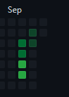

Oops, I left for a week
Here are things I do sometimes
Some games I play a lot of:
- Minecraft - Always go back to it, mostly because it's something to do
- Hypixel SB - This is just Minecraft, but one specific minigame with more grinding. Fun.
- Fortnite - How do I have 1.2k hours on this? Zero build mode is enjoyable.
- Celeste - THE indie game (?). Good platforming, most of my time is with mods that add new levels.
-
ULTRAKILL - Act II just released and I
[P]
ranked every level
- Tetris - Tetr.IO and jstris and PPT and TE:C are all unique and all great uses of time
Not an exhaustive list
What I code on:
- HTML - Does this count?
- Java - I make Mc mods with/for my friends' server. funny
- Python - S c r i p t i n g
- JS - Primarily for this site, I don't even have Node installed
- Lua - sometimes, for Figura
What I code with:
- VS Code - for pretty much anything
- IntelliJ - for Java, it makes using gradle a lot easier (No, that's not the only thing)
- Paint.net - pasting images into files, making pixel art
Back to main
{kind=link}